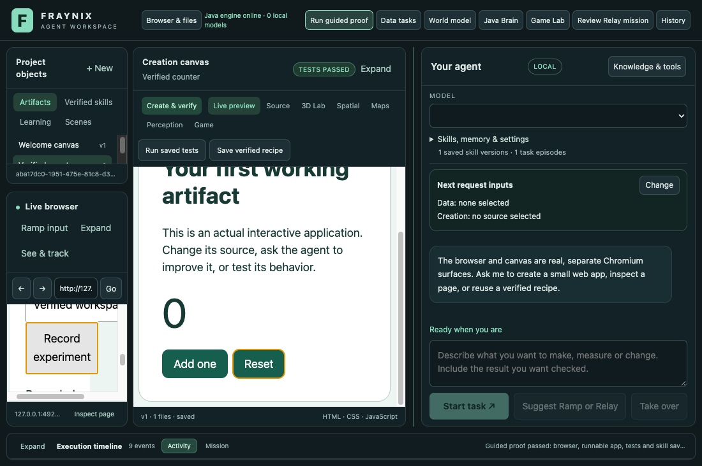
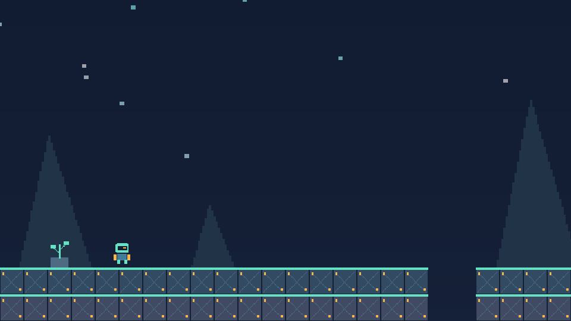

Run Fraynix on Mac, Linux and Windows
Download the current workspace without the full evidence archive, prepare the local app and run the guided proof on your computer.

The guided proof completed on Apple silicon macOS

Relay Garden rendered after 40 simulation ticks on Windows
System files
Open source